第 200–191 名

Lost Cause
Beck
第 200 名 · 2002
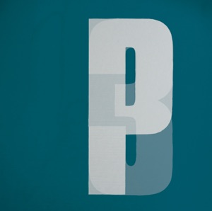
The Rip
Portishead
第 199 名 · 2008

La Rock 01
Vitalic
第 198 名 · 2001
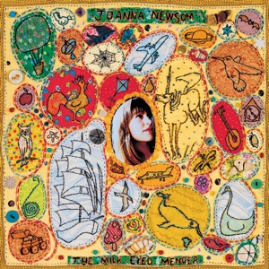
Peach, Plum, Pear
Joanna Newsom
第 197 名 · 2004

Teen Creeps
No Age
第 196 名 · 2008

Make Out Fall Out Make Up
Love Is All
第 195 名 · 2003
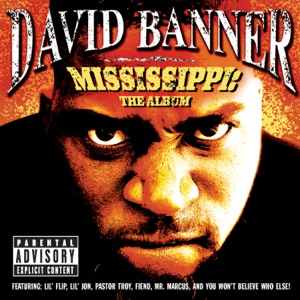
Cadillac on 22’s
David Banner
第 194 名 · 2003

Slow Jamz
Twista feat. Kanye West and Jamie Foxx
第 193 名 · 2004

Sunrise
Pulp
第 192 名 · 2001

Oxford Comma
Vampire Weekend
第 191 名 · 2008
第 190–181 名
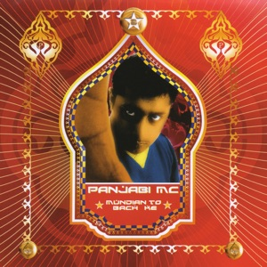
Mundian to Bach Ké (Beware of the Boys)
Panjabi MC feat. Jay-Z
第 190 名 · 2003

Silly Crimes
The Tough Alliance
第 189 名 · 2006
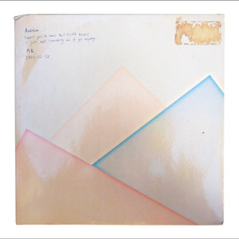
Black Cab
Jens Lekman
第 188 名 · 2005
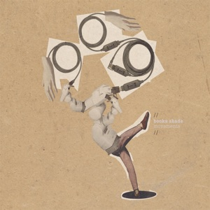
Mandarine Girl
Booka Shade
第 187 名 · 2005

Cashout
Fugazi
第 186 名 · 2001
Hip-Hop
Dead Prez
第 185 名 · 2000
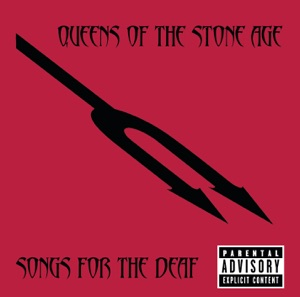
No One Knows
Queens of the Stone Age
第 184 名 · 2002
Irreplaceable
Beyoncé
第 183 名 · 2006

Our Way to Fall
Yo La Tengo
第 182 名 · 2000

The First of the Gang to Die
Morrissey
第 181 名 · 2004
第 180–171 名

Hollaback Girl
Gwen Stefani
第 180 名 · 2004

Skinny Love
Bon Iver
第 179 名 · 2007
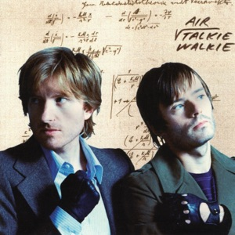
Cherry Blossom Girl
Air
第 178 名 · 2003
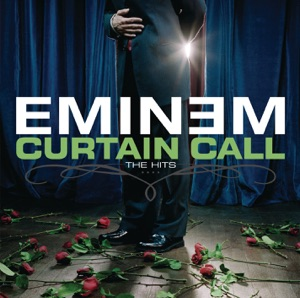
The Real Slim Shady
Eminem
第 177 名 · 2000
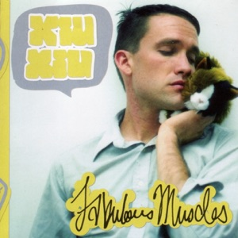
I Luv the Valley OH!
Xiu Xiu
第 176 名 · 2004
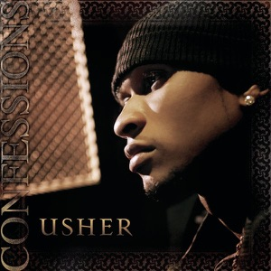
Yeah
Usher feat. Lil Jon and Ludacris
第 175 名 · 2003

You! Me! Dancing!
Los Campesinos!
第 174 名 · 2007
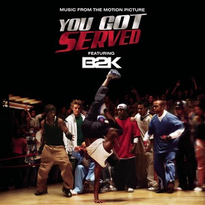
Ante Up
M.O.P.
第 173 名 · 2000
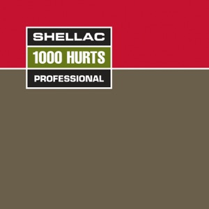
Prayer to God
Shellac
第 172 名 · 2000
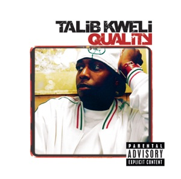
Get By (Remix)
Talib Kweli feat. Mos Def, Jay Z, Kanye West, and Busta Rhymes
第 171 名 · 2003
第 170–161 名

Trains to Brazil
Guillemots
第 170 名 · 2005
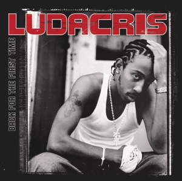
Southern Hospitality
Ludacris
第 169 名 · 2000
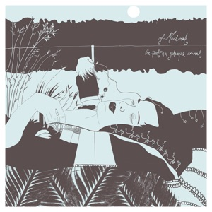
The Past Is a Grotesque Animal
Of Montreal
第 168 名 · 2007

The Other Side of Mt. Heart Attack
Liars
第 167 名 · 2006
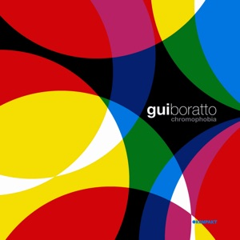
Beautiful Life
Gui Boratto
第 166 名 · 2007
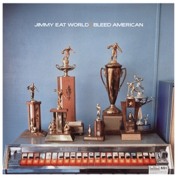
The Middle
Jimmy Eat World
第 165 名 · 2001

Come on Let’s Go
Broadcast
第 164 名 · 2000

Smash Your Head
Girl Talk
第 163 名 · 2006
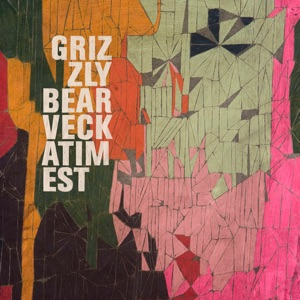
Two Weeks
Grizzly Bear
第 162 名 · 2009
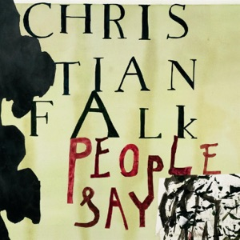
Dream On
Christian Falk feat. Robyn and Ola Salo
第 161 名 · 2006
第 160–151 名

In Da Club
50 Cent
第 160 名 · 2002

I Don’t Blame You
Cat Power
第 159 名 · 2003

Formed a Band
Art Brut
第 158 名 · 2004

Touch the Sky
Kanye West feat. Lupe Fiasco
第 157 名 · 2005
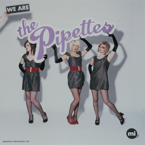
Pull Shapes
The Pipettes
第 156 名 · 2006

Clocks
Coldplay
第 155 名 · 2002

Casimir Pulaski Day
Sufjan Stevens
第 154 名 · 2005

Tessio
Luomo
第 153 名 · 2000

The Leanover
Life Without Buildings
第 152 名 · 2000

L.E.S. Artistes
Santigold
第 151 名 · 2008
第 150–141 名
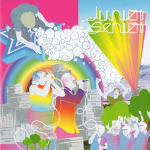
Move Your Feet
Junior Senior
第 150 名 · 2002

The Crystal Cat
Dan Deacon
第 149 名 · 2007

Collapsing at Your Doorstep
Air France
第 148 名 · 2008

Poor Places
Wilco
第 147 名 · 2002

Caecilia
Fennesz
第 146 名 · 2001

Cause = Time
Broken Social Scene
第 145 名 · 2003

We Are Your Friends
Justice vs. Simian
第 144 名 · 2003
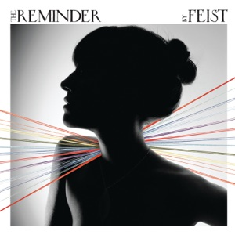
1234
Feist
第 143 名 · 2007

Do You Realize??
The Flaming Lips
第 142 名 · 2002
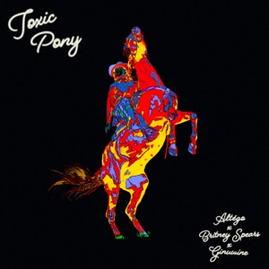
Toxic
Britney Spears
第 141 名 · 2003
第 140–131 名

NYC
Interpol
第 140 名 · 2003

Harder, Better, Faster, Stronger
Daft Punk
第 139 名 · 2001

Untitled (How Does It Feel?)
D’Angelo
第 138 名 · 2000
Destroy Everything You Touch
Ladytron
第 137 名 · 2005
Shakey Dog
Ghostface Killah
第 136 名 · 2006

The Modern Age [EP version]
The Strokes
第 135 名 · 2001

Trill
Clipse
第 134 名 · 2006
Your Cover’s Blown
Belle and Sebastian
第 133 名 · 2004

Comfy in Nautica
Panda Bear
第 132 名 · 2005

Say My Name
Destiny’s Child
第 131 名 · 2000
第 130–121 名

The Underdog
Spoon
第 130 名 · 2007

Party Hard
Andrew W.K.
第 129 名 · 2001

No Children
The Mountain Goats
第 128 名 · 2003
Oh
Ciara feat. Ludacris
第 127 名 · 2005

The Orchids
Califone
第 126 名 · 2006

Over the Ice
The Field
第 125 名 · 2006
Where Have All the Rude Boys Gone?
Ted Leo and the Pharmacists
第 124 名 · 2002
Jesus Walks
Kanye West
第 123 名 · 2004

Hey Ma
Cam’ron feat. Juelz Santana, Freekey Zekey, and Toya
第 122 名 · 2002
You Are the Generation That Bought More Shoes and You Get What You Deserve
Johnny Boy
第 121 名 · 2004
第 120–111 名
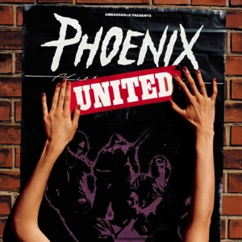
If I Ever Feel Better
Phoenix
第 120 名 · 2000

Rubber Band Man
T.I.
第 119 名 · 2003
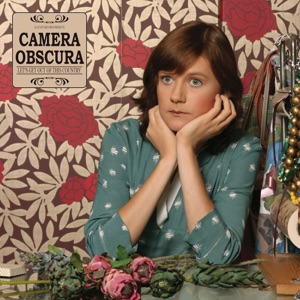
Lloyd, I’m Ready to Be Heartbroken
Camera Obscura
第 118 名 · 2006

Leaf House
Animal Collective
第 117 名 · 2004
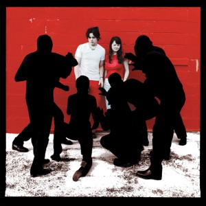
Dead Leaves and the Dirty Ground
The White Stripes
第 116 名 · 2002
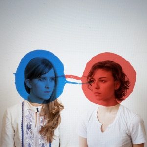
Stillness Is the Move
Dirty Projectors
第 115 名 · 2009

Me and Giuliani Down By the Schoolyard (A True Story)
!!!
第 114 名 · 2003

Milkshake
Kelis
第 113 名 · 2003
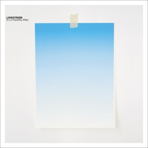
I Feel Space
Lindstrøm
第 112 名 · 2005
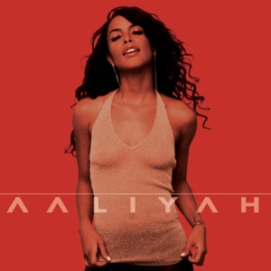
We Need a Resolution
Aaliyah
第 111 名 · 2001
第 110–101 名

Fix Up Look Sharp
Dizzee Rascal
第 110 名 · 2003
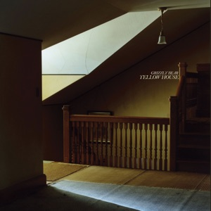
Knife
Grizzly Bear
第 109 名 · 2007

The Swish
The Hold Steady
第 108 名 · 2004
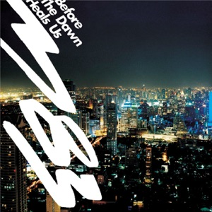
Don’t Save Us From the Flames
M83
第 107 名 · 2005
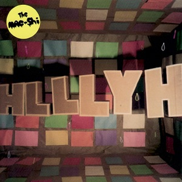
Run to Your Grave
The Mae Shi
第 106 名 · 2008

No Pussy Blues
Grinderman
第 105 名 · 2007

Lose Yourself
Eminem
第 104 名 · 2002

Mushaboom
Feist
第 103 名 · 2003

Hearts on Fire
Cut Copy
第 102 名 · 2007
So Weit Wie Noch Nie
Jürgen Paape
第 101 名 · 2002
第 100–91 名

Multiply
Jamie Lidell
第 100 名 · 2005
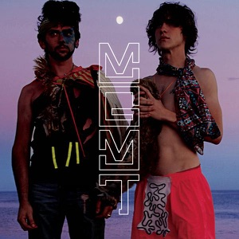
Time to Pretend
MGMT
第 99 名 · 2008
Postcards From Italy
Beirut
第 98 名 · 2006
I’m a Cuckoo (by the Avalanches)
Belle and Sebastian
第 97 名 · 2004

Distortions
Clinic
第 96 名 · 2000
I’ll Believe in Anything
Wolf Parade
第 95 名 · 2005

Hounds of Love
The Futureheads
第 94 名 · 2005

Hate It or Love It
The Game feat. 50 Cent
第 93 名 · 2005
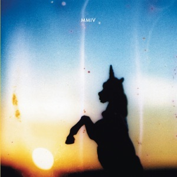
3rd Planet
Modest Mouse
第 92 名 · 2000

D.A.N.C.E.
Justice
第 91 名 · 2007
第 90–81 名

Weak Become Heroes
The Streets
第 90 名 · 2002

Such Great Heights
The Postal Service
第 89 名 · 2003
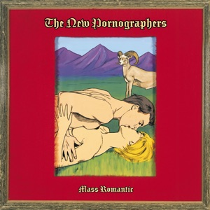
Letter From an Occupant
The New Pornographers
第 88 名 · 2002
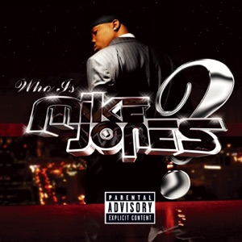
Still Tippin’
Mike Jones feat. Paul Wall and Slim Thug
第 87 名 · 2005

To Hell With Good Intentions
Mclusky
第 86 名 · 2002
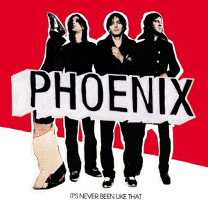
Long Distance Call
Phoenix
第 85 名 · 2006
Young Folks
Peter Bjorn and John feat. Victoria Bergsman
第 84 名 · 2006
Where’s Your Head At?
Basement Jaxx
第 83 名 · 2001

Be Mine
Robyn
第 82 名 · 2005

Nothing Ever Happened
Deerhunter
第 81 名 · 2008
第 80–71 名

A Milli
Lil Wayne
第 80 名 · 2008
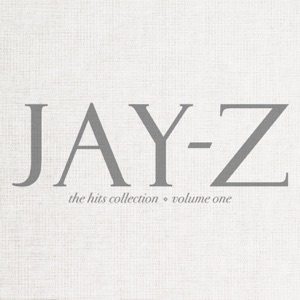
Izzo (H.O.V.A.)
Jay-Z
第 79 名 · 2001
A Stroke of Genius
Freelance Hellraiser
第 78 名 · 2001

Stay Fly
Three 6 Mafia
第 77 名 · 2005
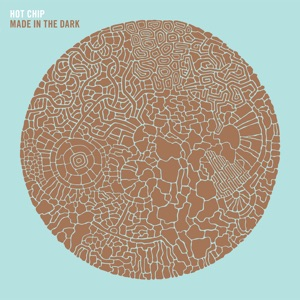
Ready for the Floor
Hot Chip
第 76 名 · 2007
Try Again
Aaliyah
第 75 名 · 2000

Silent Shout
The Knife
第 74 名 · 2005

Grass
Animal Collective
第 73 名 · 2005

Mr. Brightside
The Killers
第 72 名 · 2003
Gone
Kanye West feat. Consequence and Cam’ron
第 71 名 · 2005
第 70–61 名
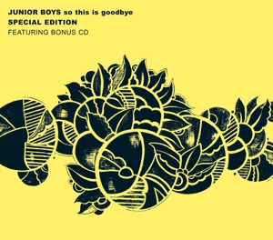
In the Morning
Junior Boys
第 70 名 · 2006

Rebellion (Lies)
Arcade Fire
第 69 名 · 2005

Forgot About Dre
Dr. Dre feat. Eminem
第 68 名 · 2000

The Funeral
Band of Horses
第 67 名 · 2007

White Winter Hymnal
Fleet Foxes
第 66 名 · 2008

Cry Me a River
Justin Timberlake
第 65 名 · 2002
Obstacle 1
Interpol
第 64 名 · 2002
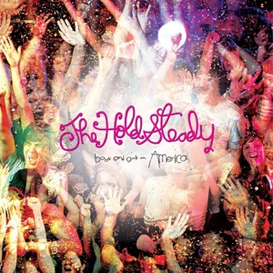
Stuck Between Stations
The Hold Steady
第 63 名 · 2006

New Slang
The Shins
第 62 名 · 2001
Jesus, Etc.
Wilco
第 61 名 · 2002
第 60–51 名

Nutmeg
Ghostface Killah
第 60 名 · 2000

Pyramid Song
Radiohead
第 59 名 · 2001
Fell in Love With a Girl
The White Stripes
第 58 名 · 2002
Wolf Like Me
TV on the Radio
第 57 名 · 2006
I Luv U
Dizzee Rascal
第 56 名 · 2003

Ms. Jackson
Outkast
第 55 名 · 2000

Work It
Missy Elliott
第 54 名 · 2002
Someday
The Strokes
第 53 名 · 2001

Flashing Lights
Kanye West feat. Dwele
第 52 名 · 2007

Takeover
Jay-Z
第 51 名 · 2001
第 50–41 名

Romeo
Basement Jaxx
第 50 名 · 2001
Chicago
Sufjan Stevens
第 49 名 · 2005
Bro’s
Panda Bear
第 48 名 · 2006

Archangel
Burial
第 47 名 · 2007
With Every Heartbeat
Robyn feat. Kleerup
第 46 名 · 2007

Over and Over
Hot Chip
第 45 名 · 2005

Take Me Out
Franz Ferdinand
第 44 名 · 2004

Int’l Players Anthem (I Choose You)
UGK feat. Outkast
第 43 名 · 2007

Atlas
Battles
第 42 名 · 2007
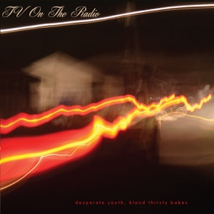
Staring at the Sun
TV on the Radio
第 41 名 · 2004
第 40–31 名
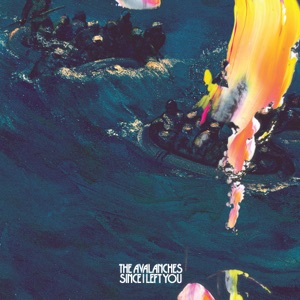
Since I Left You
The Avalanches
第 40 名 · 2000

Float On
Modest Mouse
第 39 名 · 2004

What You Know
T.I.
第 38 名 · 2006

Can’t Get You Out of My Head
Kylie Minogue
第 37 名 · 2001

Svefn-G-Englar
Sigur Rós
第 36 名 · 2000
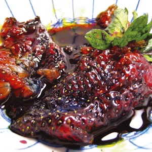
Fireworks
Animal Collective
第 35 名 · 2007

Galang
M.I.A.
第 34 名 · 2003

The Way We Get By
Spoon
第 33 名 · 2003

1 Thing
Amerie
第 32 名 · 2005
Big Pimpin‘
Jay-Z feat. UGK
第 31 名 · 2000
第 30–21 名
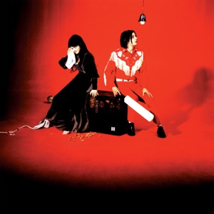
Seven Nation Army
The White Stripes
第 30 名 · 2003
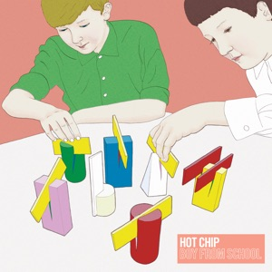
Boy From School
Hot Chip
第 29 名 · 2006
Hope There’s Someone
Antony and the Johnsons
第 28 名 · 2005

Grindin’
Clipse
第 27 名 · 2002
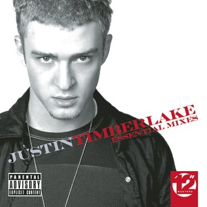
My Love
Justin Timberlake feat. T.I.
第 26 名 · 2006

Umbrella
Rihanna feat. Jay-Z
第 25 名 · 2007

Everything in Its Right Place
Radiohead
第 24 名 · 2000
Digital Love
Daft Punk
第 23 名 · 2001

Someone Great
LCD Soundsystem
第 22 名 · 2007
Since U Been Gone
Kelly Clarkson
第 21 名 · 2005
第 20–11 名
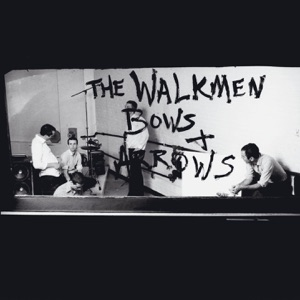
The Rat
The Walkmen
第 20 名 · 2004
Ignition (Remix)
R. Kelly
第 19 名 · 2002

Blind
Hercules and Love Affair
第 18 名 · 2008

Heartbeat
Annie
第 17 名 · 2004
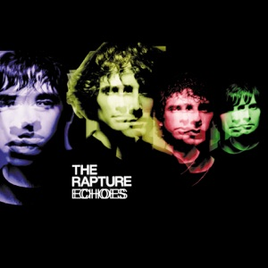
House of Jealous Lovers
The Rapture
第 16 名 · 2002

Heartbeats
The Knife
第 15 名 · 2002
99 Problems
Jay-Z
第 14 名 · 2003

Losing My Edge
LCD Soundsystem
第 13 名 · 2002

Hey Ya!
OutKast
第 12 名 · 2003

Crazy
Gnarls Barkley
第 11 名 · 2005
第 10–1 名
Neighborhood #1 (Tunnels)
Arcade Fire
第 10 名 · 2004

My Girls
Animal Collective
第 9 名 · 2009
Idioteque
Radiohead
第 8 名 · 2000

Get Ur Freak On
Missy Elliott
第 7 名 · 2001

Maps
Yeah Yeah Yeahs
第 6 名 · 2003
One More Time
Daft Punk
第 5 名 · 2000
Crazy in Love
Beyoncé feat. Jay-Z
第 4 名 · 2003

Paper Planes (Diplo Remix)
M.I.A. feat. Bun B and Rich Boy
第 3 名 · 2007
All My Friends
LCD Soundsystem
第 2 名 · 2007
B.O.B.
OutKast
第 1 名 · 2000
找不到符合的作品，換個關鍵字試試。